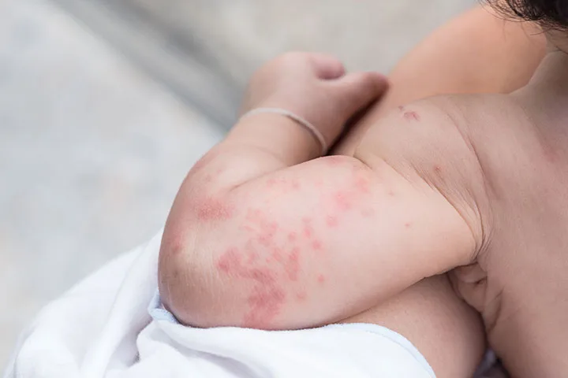
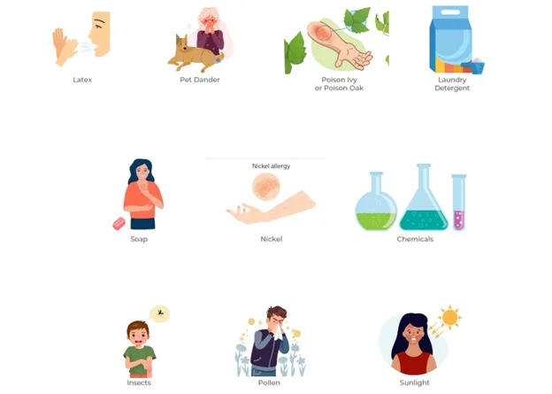
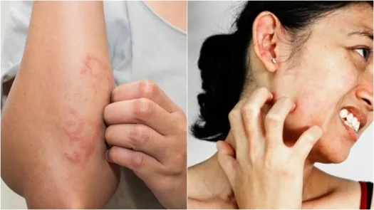
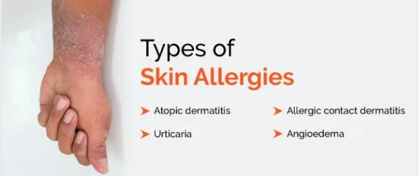
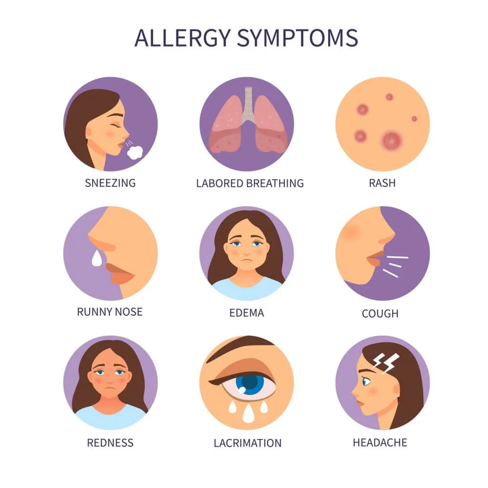
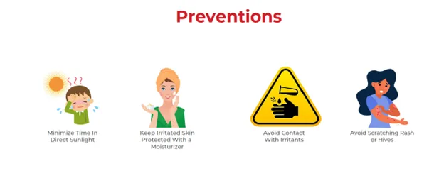
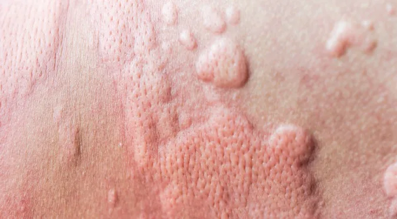

Expanded Nursing Uganda Explanation
Skin allergies should be understood beyond a short definition. Link the concept to patient history, focused assessment, common risks, nursing priorities, documentation and evaluation of outcomes.
01 SKIN ALLERGIES
Skin allergy is an abnormal reaction of the skin following an irritant that continues as long as there is an exposure to that irritant.
Skin allergies frequently cause rashes, or swelling and inflammation within the skin, in what is known as a “weal and flare” reaction characteristic of hives and angioedema.
02 Causes and Triggers of Skin Allergies
- Contact Allergens : Substances that directly touch the skin and trigger an allergic reaction, such as nickel, latex, fragrances, and certain plants (e.g., poison ivy).
- Food Allergies : Allergic reactions to certain foods, such as peanuts, shellfish, dairy, and eggs, that can manifest as skin rashes or hives.
- Insect Bites and Stings : Bites or stings from insects, such as bees, wasps, and mosquitoes, can release allergens that cause allergic reactions.
- Medications : Certain medications, such as antibiotics (e.g., penicillin), nonsteroidal anti-inflammatory drugs (NSAIDs), and chemotherapy drugs, can cause allergic skin reactions.
- Environmental Irritants : Exposure to environmental irritants, such as dust mites, pollen, and pet dander, can trigger allergic reactions in susceptible individuals.
- Skin Conditions : Certain skin conditions, such as eczema and psoriasis, can make the skin more sensitive and prone to allergic reactions.
- Metals : Exposure to certain metals, such as nickel, cobalt, and chromium, can cause allergic reactions in some people, like some who react to necklaces and rings.
- Rubber and Latex : Some individuals are allergic to rubber or latex, which can be found in gloves, condoms, and certain clothing items.
- Cosmetics and Personal Care Products : Ingredients in cosmetics, skincare products, and hair dyes can cause allergic reactions in some people.
- Genetics : Some individuals are genetically predisposed to developing skin allergies, increasing their risk of developing reactions to various triggers.
03 Pathophysiology of Skin Allergies
Contact with Allergen:
- Skin allergies occur when the skin comes into contact with an allergen, which is a substance that triggers an immune response in the body.
- Common allergens include chemicals, metals (such as nickel), fragrances, plants (like poison ivy), medications, and certain fabrics.
Sensitization :
- When the allergen comes into contact with the skin, it can penetrate the outermost layer of the skin called the stratum corneum.
- Langerhans cells, a type of immune cell in the skin, capture and process the allergen.
- The allergen is then presented on the surface of Langerhans cells, activating the immune response.
Activation of the Immune Response:
- The immune system recognizes the allergen as a threat and triggers an immune response.
- Immune cells, such as T cells and B cells, are activated and release chemical mediators, including histamine.
- Histamine causes blood vessels to dilate and become leaky, leading to redness, swelling, and itching.
Inflammatory Response:
- The release of histamine and other chemical mediators leads to inflammation in the skin.
- Inflammatory cells, such as mast cells and eosinophils, are recruited to the site of allergen contact.
- These cells release additional inflammatory substances, increasing the allergic reaction.
Symptoms :
- The immune response and inflammation in the skin result in various symptoms, including redness, itching, swelling, and the formation of a rash.
- The specific symptoms and their severity can vary depending on the individual and the allergen involved.
04 Forms of Skin Allergies
Atopic Dermatitis (Eczema):
- Atopic dermatitis, also known as eczema, is a common skin condition that primarily affects children but can also occur in adults.
- It is characterized by dry and itchy skin due to a “leakiness” of the skin barrier, making it more susceptible to irritation and inflammation from environmental factors.
- In some cases, eczema symptoms can be worsened by food sensitivities.
- Severe atopic dermatitis can be caused by a genetic mutation in the skin called filaggrin.
- Eczema is often associated with asthma, allergic rhinitis (hay fever), or food allergies, and this progression is known as the atopic march.
Allergic Contact Dermatitis:
- Allergic contact dermatitis occurs when the skin comes into direct contact with an allergen.
- Common allergens include nickel, certain plants like poison ivy, poison oak, and poison sumac, as well as various chemicals found in everyday products.
- Symptoms of allergic contact dermatitis can include redness, bumps, scales, itching, or swelling at the point of contact .
Urticaria (Hives):
- Urticaria, commonly known as hives, is an inflammatory skin condition triggered by the release of histamine by the immune system.
- It causes small blood vessels to leak, resulting in swelling of the skin.
- Acute urticaria can be caused by allergic reactions to certain foods, medications, insect bites, or non-allergic triggers like heat or exercise.
- Chronic urticaria, on the other hand, lasts for a longer period and is often not caused by specific triggers.
Angioedema:
- Angioedema is swelling that occurs in the deeper layers of the skin, often accompanying hives .
- It commonly affects soft tissues such as the eyelids, mouth, or genitals .
- Acute angioedema is usually caused by allergic reactions to medications or foods.
- Chronic recurrent angioedema is characterized by the return of symptoms over a long period without an identifiable cause .
05 Signs and Symptoms of Skin Allergies
Skin allergies can manifest in various ways and may differ depending on the specific allergic reaction.
- Rash : Skin allergies often result in the development of a rash, which can appear as red, inflamed patches on the skin.
- Itching : Itchy skin is a common symptom of skin allergies. The urge to scratch the affected area may be intense.
- Redness : Allergic reactions can cause redness in the affected area, making the skin appear flushed or irritated.
- Swelling : Skin allergies can lead to swelling, which may be localized or affect a larger area of the body.
- Raised bumps: Allergic reactions can cause the formation of raised bumps on the skin, known as hives or wheals.
- Scaling : Scaling refers to the flaking of the skin, which can occur as a result of an allergic reaction.
- Cracked skin : In some cases, skin allergies can cause the skin to become dry and cracked, leading to discomfort.
- Dry skin : Eczema, a common skin condition associated with allergies, can cause itchy, red, or dry skin. The affected skin may also weep or leak fluid when scratched.
- Excessive little lines on the skin of the palms: Individuals with a faulty filaggrin gene may develop hand eczema with excessive little lines on the skin of their palms.
- Swelling without itch: Angioedema is a deeper layer of swelling that often appears on the face, particularly around the eyes, cheeks, or lips. It can also occur on the hands, feet, genitals, or inside the bowels or throat. Unlike hives, angioedema does not cause itching.
06 Prevention of Skin Allergies
- Identify and avoid allergens : The first step in preventing skin allergies is to identify the specific allergens that trigger your reactions. Common allergens include certain metals (like nickel), fragrances, chemicals, latex, and certain plants.
- Read product labels : When purchasing skincare products, cosmetics, detergents, or any other products that come into contact with your skin, carefully read the labels. Look for products that are labeled hypoallergenic, fragrance-free, and free of known allergens.
- Patch testing : This test involves applying small amounts of potential allergens to your skin to determine which substances you are allergic to.
- Protect your skin : Use protective measures to minimize contact with potential allergens. For example, wear gloves when handling chemicals or irritants, and use barrier creams or ointments to protect your skin from potential allergens.
- Moisturize regularly : Keeping your skin moisturized can help maintain its natural barrier function and reduce the risk of skin allergies. Choose moisturizers that are gentle and free of potential allergens.
- Practice good hygiene : Maintain good hygiene practices to prevent skin allergies. This includes regular bathing with mild, fragrance-free soaps and shampoos. After bathing, pat your skin dry instead of rubbing it.
- Avoid hot water and harsh soaps : Hot water and harsh soaps can strip your skin of its natural oils and disrupt its protective barrier. Instead use lukewarm water and mild, fragrance-free soaps to minimize the risk of skin allergies.
- Wear appropriate clothing: Choose clothing made from natural, breathable fabrics like cotton or silk. Avoid clothing with rough textures or tight-fitting garments that can irritate the skin. Wash new clothes before wearing them to remove any potential irritants.
- Manage stress : Stress can exacerbate skin conditions and increase the risk of allergic reactions. Practice stress management techniques such as exercise, meditation, or engaging in hobbies to reduce stress levels.
07 Diagnosis and Investigations for Skin Allergies:
- Medical History : Taking a detailed medical history through assessment about symptoms, their duration, and any potential triggers or exposures that may be related to skin allergies.
- Physical Examination : A thorough physical examination of the affected skin to assess the nature and severity of the allergic reaction. Look for specific signs such as redness, swelling, rash, or other characteristic skin changes.
- Allergy Skin Tests : Allergy skin tests, such as a skin prick test or scratch test, are used to identify specific allergens causing skin allergies. During these tests, small amounts of potential allergens are applied to the skin, like on the forearm or back. If you are allergic to any of the substances, a small raised bump or redness, known as a wheal, will appear at the test site.
- Intradermal Test : This involves injecting a small amount of allergen just under the skin to check for a more sensitive reaction. Intradermal tests are more sensitive but may also have a higher risk of false-positive results.
- Blood Tests : Blood tests, such as the radioallergosorbent test (RAST) or enzyme-linked immunosorbent assay (ELISA), may be used to measure the levels of specific IgE antibodies in the blood. These tests can help identify allergens that may be causing skin allergies. Blood tests are used when skin tests cannot be performed, or as a follow-up to confirm the results of skin tests.
- Patch Testing : Patch testing is commonly used to diagnose allergic contact dermatitis, a type of skin allergy caused by direct contact with allergens. During this test, small amounts of potential allergens are applied to patches, which are then placed on the skin for a specific period. The patches are then removed, and the skin is evaluated for any allergic reactions.
08 Management of Skin Allergies
Initial Assessment:
- Obtain a detailed medical history, including the onset, duration, and progression of symptoms, previous allergic reactions, and any known triggers.
- Perform a physical examination to assess the extent and severity of the skin allergy, including the appearance of the rash, presence of swelling or blistering, and any associated symptoms.
Identification of Allergen:
- Conduct a thorough evaluation to identify the specific allergen causing the skin allergy. This may involve a detailed history, physical examination, and potentially allergy testing such as patch testing or skin prick tests.
- Collection of blood samples where necessary can also be done.
Allergic Reaction:
- Anyone having an allergic reaction should be watched closely for changes
- Remember that allergy reactions are unpredictable
- The way that your body reacts to an allergen one time cannot predict how it will react the next time
- Stay with the child and alert his or her parents or emergency contacts
- Symptoms can also worsen quickly, progressing to the life-threatening condition anaphylaxis
- Epinephrine is the only treatment for anaphylaxis!
Symptomatic Treatment:
- Provide immediate relief for symptoms such as itching and inflammation.
- Prescribe and administer antihistamines to alleviate itching and reduce allergic reactions.
- Advise the patient to avoid scratching the affected area to prevent further irritation and potential infection.
- Suggest the use of cool compresses or topical corticosteroid creams to reduce inflammation and soothe the skin.
Avoidance of Allergen:
- Educate the patient about the identified allergen and provide guidance on how to avoid exposure.
- Advise the patient to read product labels carefully and avoid using products that contain the allergen.
- Provide information on alternative products or ingredients that can be used instead.
Medical Management:
An Action Plan may include these medications
- Topical Antihistamine
- Inhaler (if allergy triggers asthma symptoms)
- Nebulizer (if allergy triggers asthma symptoms)
- Epinephrine
Refer to the Action Plan!
- Antihistamines are appropriate for mild to moderate symptoms. The antihistamines cannot control a severe reaction and are not a substitute for epinephrine. If symptoms multiply or worsen, give epinephrine .
- Antihistamines, known as H1 blockers, reduce or block histamines/ chemicals the body releases when it comes into contact with an allergen
- Examples of Antihistamines include diphenhydramine (Benadryl®) and cetirizine (Zyrtec®)
- Antihistamines may be topical or oral.
- Prescribe topical corticosteroids for moderate to severe skin allergies to reduce inflammation and relieve symptoms. Consider prescribing oral corticosteroids for severe cases or when topical treatment is not sufficient.
- In cases of allergic contact dermatitis, recommend the use of barrier creams or ointments to protect the skin from further exposure to the allergen.
Pediatric Care:
- Ensure appropriate dosing of medications based on age and weight.
- Provide education to parents or caregivers on how to manage the child’s skin allergies, including avoidance of allergens and proper application of topical medications.
- Monitor pediatric patients closely for any signs of worsening symptoms or adverse reactions to medications and should report these changes immediately.
Follow-up and Referral:
- Schedule a follow-up appointment to assess the patient’s response to treatment and make any necessary adjustments.
- Consider referral to an allergist or dermatologist for further evaluation and management, especially in complex or severe cases.
09 Nursing Uganda Clinical Lens
Use Skin allergies as a practical nursing topic, not only a memorized definition. Adapt assessment and care to age, weight, development, caregiver knowledge and family support.
- What to understand first: define skin allergies, identify the normal or expected pattern, then explain what changes when the patient is unwell.
- Why it matters in care: the nurse must recognize risk early, explain findings clearly, document accurately and know when to escalate.
- How to revise it: connect each point to assessment, nursing diagnosis or care problem, intervention, rationale and evaluation.
10 Assessment Guide
- Airway, breathing, circulation, hydration, temperature, feeding, activity and danger signs.
- Weight-based medicines, immunization status, growth, development and caregiver concerns.
- Signs that may be subtle in children, including lethargy, poor feeding, fast breathing or convulsions.
11 Nursing Priorities, Rationales and Outcomes
- Use age-appropriate communication and involve the caregiver.
- Prevent dehydration, hypothermia, medication errors and delayed referral.
- Teach home care, danger signs and follow-up clearly.
The rationale for these priorities is patient safety: nursing actions should prevent deterioration, reduce discomfort, support recovery and create clear evidence for the next caregiver.
- Expected outcome: The child is clinically improving, caregiver instructions are understood and follow-up is arranged.
12 Patient Teaching and Revision Check
- Explain skin allergies in simple language the patient or caregiver can repeat back.
- Teach warning signs, medicine or follow-up instructions, hygiene or lifestyle points where relevant.
- For exams, prepare a short answer using: definition, causes or risk factors, signs, assessment, management, complications and prevention.
- For ward practice, document baseline findings, actions taken, patient response and the plan for review.
Illustrations and Diagrams (7)







Related Video Lectures
Watch nursing lecture videos on YouTube for this topic. Opens in a new tab.
Watch on YouTubeExternal link: YouTube may use its own cookies and terms. Nursing Uganda is not affiliated with YouTube.